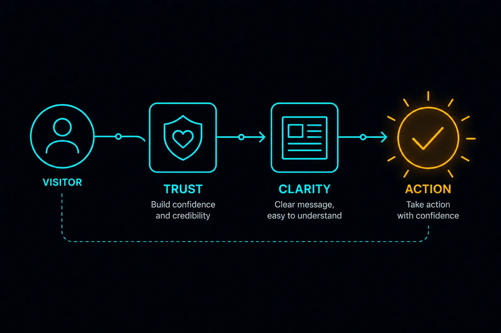
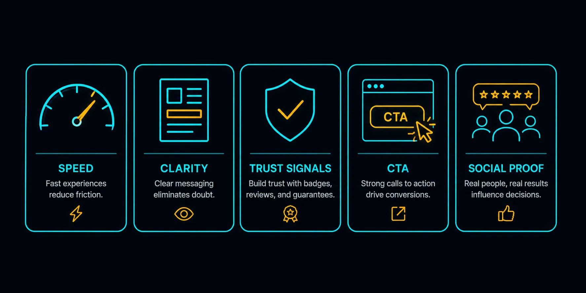
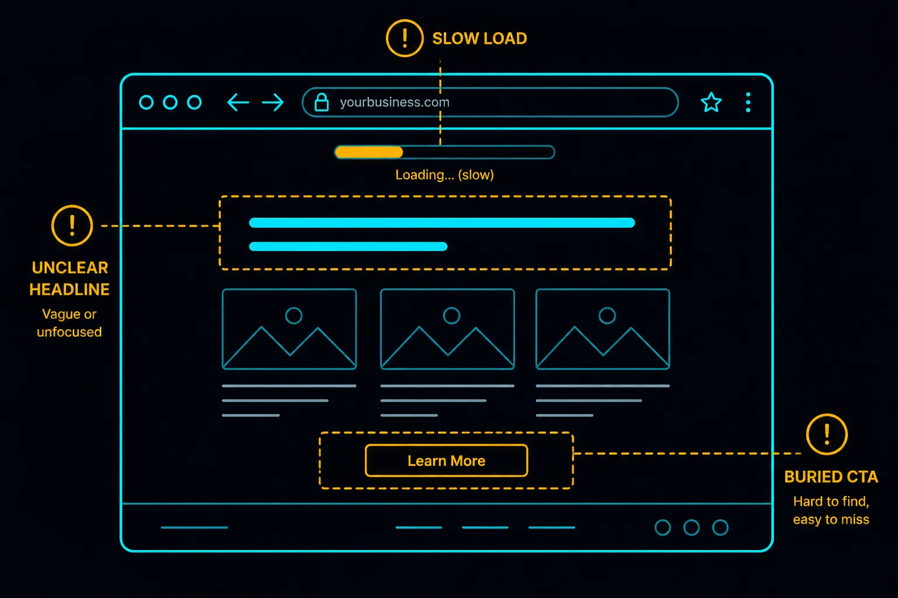

Most Malaysian SME owners, when they think about getting more enquiries from their website, assume the answer is a more visible button or a stronger sales message. Push harder. Make it obvious. Add urgency.
In our experience, that is almost never the problem. Visitors who leave without enquiring usually leave because of small friction points they cannot even articulate — not because the CTA button was in the wrong colour.
Here is what actually drives website conversion for a small business.
Conversion Is Not About Persuasion — It Is About Removing Doubt

When someone lands on a small business website looking for a service, they arrive with a question already answered: I need this service. They are not deciding whether to want aircond service or renovation work. They are deciding whether to contact you specifically, or someone else.
Your website does not need to convince them to want the service. It needs to convince them that you are the right choice. That is a different problem entirely.
The friction that kills conversion is not "they didn't want it badly enough." It is doubt: Is this company real? Do they serve my area? Are they too expensive? Will they ghost me after I pay?
Every element of your website either reduces that doubt or adds to it.
The Five Things That Actually Move Conversion

1. A clear value proposition in the first five seconds
When a visitor lands on your page, they decide within a few seconds whether to stay or leave. If your headline reads "Welcome to Our Website" or "Your Trusted Partner in Excellence," they have learned nothing about you and have no reason to scroll.
A converting headline states, plainly: what you do, who you do it for, and where.
"Aircond Service and Repair for Klang Valley Homes and Offices" does more work than any tagline. A visitor who needs aircond service in Petaling Jaya immediately knows they are in the right place.
2. Social proof that looks real
Testimonials are the single most effective trust-building element on a small business website — but only if they look genuine.
Generic testimonials ("Great service! Highly recommended!") with no name, no company, no context, do not build trust. They signal that the testimonials may have been fabricated.
Testimonials with a full name, a location, and a specific detail ("They fixed our office aircond in 2 hours, no waiting around — Mr. Tan, Puchong") convert far better. If you have permission to use a photo or a client's company name, use it.
In our experience working with Malaysian SME clients, the addition of two or three credible testimonials consistently produces the clearest improvement in enquiry rates — more than any design change.
3. Page speed
A visitor who waits 6 seconds for your page to load has already started reading a competitor's page. This is not an exaggeration. Google's own data shows that 53% of mobile visitors abandon pages that take more than 3 seconds to load.
For Malaysian websites, where most visitors are on mobile LTE networks, a slow-loading page is a conversion problem before it is a technical problem. The visitor never reaches the testimonials, the portfolio, or the WhatsApp button — because they left before the page finished rendering.
This is covered in more depth in our article on why website load speed matters on Malaysian mobile networks. The short version: compress your images, use fast hosting, and build lean.
4. A single, obvious next step
Multiple calls to action create decision paralysis. If your page has a "Call Us" button, a "Get a Quote" form, an email address, a Facebook link, and a WhatsApp button all visible at once, visitors stall. They have to decide which channel to use instead of simply acting.
For Malaysian SME websites, one CTA wins: WhatsApp. It is how clients communicate here. A clear, prominent "WhatsApp Us" button — above the fold and floating at the bottom of the screen — removes the decision entirely.
Everything else is secondary.
5. Proof that you operate where they are
Malaysian service businesses are hyperlocal. A visitor looking for a renovation contractor in Setapak is not interested in a contractor whose portfolio is entirely in Johor Bahru.
Naming your coverage areas explicitly — with suburbs, not just cities — converts better than leaving this implicit. "Serving Klang Valley: KL, Petaling Jaya, Shah Alam, Subang Jaya, Cheras, Ampang" takes two lines and immediately qualifies every visitor. The right people stay. The wrong people leave. Both outcomes are good for your conversion rate.
What Does Not Move Conversion (As Much As People Think)
The colour of the CTA button. Millions of words have been written about button colour in conversion rate optimisation. For a Malaysian SME landing page, the button colour matters a great deal less than whether the button exists, is visible, and is labelled clearly.
The length of the page. Long pages do not hurt conversion if the content is genuinely useful. Short pages do not automatically convert better. What matters is whether the visitor, by the time they reach the CTA, has had their doubt removed.
Aggressive popup overlays. A popup that appears 3 seconds after landing, blocking the content, to ask for a phone number rarely converts well for a local service business. It adds friction before trust is established.
The Common Pattern We See

When we look at why a particular website is not generating enquiries, the problem is almost always one of three things:
- The page loads slowly enough that most visitors leave before seeing the content
- There is no social proof, so visitors are not confident enough to make contact
- The path to contact is unclear — too many options, or the WhatsApp button is hard to find on mobile
Fix these three things before anything else. The results are usually immediate.